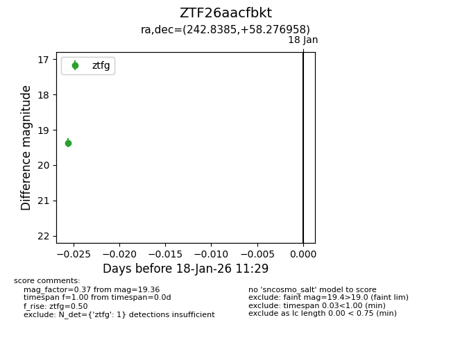
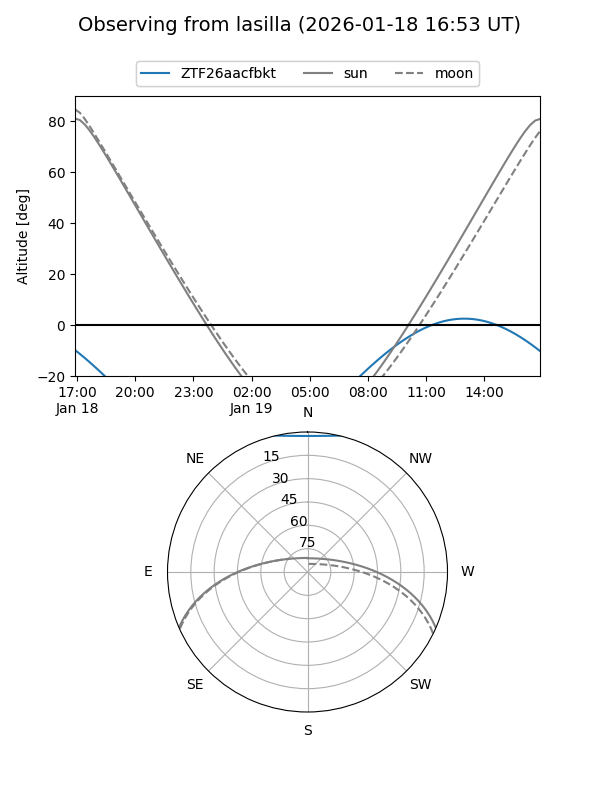
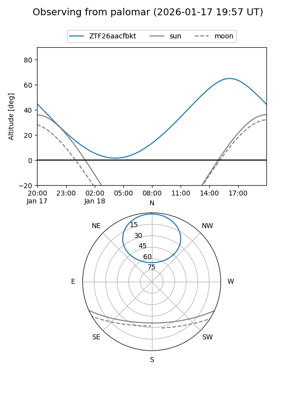

ZTF26aacfbkt
Target ZTF26aacfbkt at 2026-01-18 11:30
Aliases and brokers:
FINK: link
Lasair: link
ALeRCE: link
alt names
ZTF26aacfbkt (ztf,fink_ztf)
Coordinates:
equatorial (ra, dec) = 242.8385,+58.27696
equatorial (HMS+DMS) = 16:11:21.23,+58:16:37.05
galactic (l, b) = (89.1906,+43.53481)
Flags:
Photometry:
last ztfg=19.36
1 ztfg detections
Lightcurve

Visibility


Additional plots